본 포스트는 서울대학교 GSDS Sanghack Lee 교수님의 Causal Inference 강의 자료(7강 An Algorithmic Approach to Identification)를 바탕으로, 강의를 처음 듣는 독자도 논리적 흐름을 따라갈 수 있도록 재구성한 것입니다. 이론적 원전은 Jin Tian의 박사학위 논문 Studies in Causal Reasoning and Learning (UCLA, 2002)이며, C-인자(Q-분해)와
Identify알고리즘의 표기 · 보조정리 번호는 이 논문의 체계를 따릅니다. 완전성에 대한 후속 확인은 Huang & Valtorta (AAAI 2006), Shpitser & Pearl (AAAI 2006)에서 이루어졌습니다.
한 줄 요약 (TL;DR)
“관측 분포를 잠재 교란이 묶어 놓은 덩어리(C-component) 단위로 쪼개면, ’조상 축약’과 ’C-component 인수분해’라는 단 두 개의 연산만으로 임의의 인과효과를 기계적으로 식별할 수 있으며, 이 절차는 충분할 뿐 아니라 필요하기까지 합니다.”
4강의 백도어 기준과 5강의 조정 기준은 특정 그래프 모양에만 통하는 충분조건이었고, 6강의 do-calculus는 완전하지만 “어떤 규칙을 어떤 순서로 적용할지”를 알려 주지 않는 비구성적 도구였습니다. 그래프를 던져 주면 답을 내놓는 기계가 없었던 것입니다.
7강은 관점을 바꿉니다. 식별을 “질의를 변형하는 문제”가 아니라 “분포를 인자로 쪼개고 각 인자를 따로 식별하는 문제” 로 다시 세웁니다. 열쇠는 \(Q[C]\) — \(C\) 바깥 변수를 전부 개입했을 때 \(C\) 위에 남는 인과효과 — 라는 하나의 대상이며, 잠재 교란은 이 인자들을 C-component 단위로만 묶는다는 것이 Tian의 관찰입니다.
그 결과 \(P(v)\)는 C-component별 C-인자의 곱으로 분해되고, 목표 인과효과 \(P(y \mid do(x))\) 역시 관련 부분 \(\mathbf{C} = An(Y)_{\mathcal{G}_{\underline{X}}}\) 위의 C-인자 곱으로 환원됩니다. 각 인자를 재귀 함수
Identify가 판정하며, 이 판정이 실패하면 어떤 do-calculus 유도로도 식별할 수 없다는 것이 완전성 정리입니다. 식별 가능성이 마침내 “영리함의 문제”에서 “기계가 답하는 문제” 로 내려옵니다.
들어가며 (Roadmap)
지금까지 우리는 Back-door 기준이나 Front-door 기준, 혹은 do-calculus를 이용해 인과효과 \(P(y \mid do(x))\)를 관측 분포 \(P(v)\)로 환원(식별)하는 방법을 살펴보았습니다. 그러나 이 방법들에는 두 가지 아쉬움이 있었습니다.
- Back-door / Front-door 기준은 특정 그래프 구조에만 적용되는 충분조건일 뿐입니다.
- do-calculus는 강력하지만, “어떤 규칙을 어떤 순서로 적용해야 하는가”를 알려주지 않는 비구성적(non-constructive) 도구입니다. 즉, 식별이 가능한지 아닌지를 기계적으로 판정해 주지 못합니다.
이 강의의 목표는 그래프만 주어지면 자동으로 식별 여부를 판정하고, 가능하다면 추정식까지 출력하는 알고리즘을 세우는 것입니다. 이를 위한 전략(Roadmap)은 다음 세 단계입니다.
- 분해(Decomposition): SCM이 생성하는 확률분포 \(P(v)\)를, 대응되는 인과 다이어그램에 기반하여 여러 인자(factor)들의 곱으로 분해(factorization)하는 방법을 정의합니다.
- 연산(Operations): 이렇게 분해된 분포로부터 특정 인자(factor)를 식별(identify) 해 내는 연산을 확립합니다.
- 종합(Synthesis): 목표 인과효과를 이 인자들의 함수로 표현한 뒤, 각 인자를 독립적으로 식별하는 체계적인 절차를 개발합니다.
1. 관측 분포의 인수분해 (Factorizing Observational Distributions)
원본 강의는 이 절의 맨 앞에서 교란 성분(C-component) 의 정의부터 제시합니다. 다만 그 정의가 왜 필요한지는 준마르코프 모델에서 분해가 깨지는 장면을 먼저 본 뒤라야 선명해지므로, 이 글에서는 정의를 §2.6으로 미루고 분해가 무너지는 과정부터 따라가겠습니다.
1.1. 마르코프 모델의 경우 (Markovian Case)
먼저 마르코프 모델(Markovian model), 즉 모든 외생변수 \(U_i\)가 서로 독립적이고 각각 하나의 관측변수에만 영향을 주는 경우를 생각해 보겠습니다.
관측 분포 \(P(v)\)는 외생변수 \(u\)에 대한 주변화(marginalization)로 정의됩니다. 여기에 연쇄 법칙(chain rule) 과 인과 다이어그램의 마르코프 성질을 적용하면 다음과 같이 분해됩니다.
\[ P(v) = \sum_u P(u,v) = \sum_u P(u) \prod_{V_i \in V} P(v_i \mid v_1,\dots,v_{i-1}, u) = \sum_u P(u) \prod_{V_i \in V} P(v_i \mid pa_i, u_i). \]
- 두 번째 등호는 단순 연쇄 법칙입니다.
- 세 번째 등호가 핵심인데, 각 변수 \(V_i\)는 자신의 부모 \(pa_i\)와 자신에게 직접 연결된 외생변수 \(u_i\)가 주어지면 나머지 모든 과거 변수와 독립이라는 마르코프 성질을 이용한 것입니다.
예시: 세 변수 모델
다음과 같은 구조(\(Z \to X\), \(Z \to Y\), \(X \to Y\))를 가정해 보겠습니다.
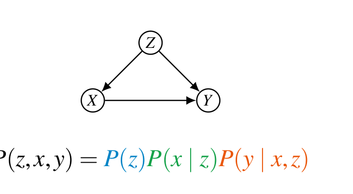
이 모델에서 결합분포는 다음과 같이 전개됩니다.
\[ P(z,x,y) = \sum_u P(u)\, P(z \mid u_z)\, P(x \mid z, u_x)\, P(y \mid x, z, u_y). \]
마르코프 모델에서는 \(P(u) = P(u_z)P(u_x)P(u_y)\)로 완전히 분리되므로, 각 외생변수에 대한 합을 따로 떼어낼 수 있습니다.
\[ P(z,x,y) = \underbrace{\left(\sum_{u_z} P(z \mid u_z) P(u_z)\right)}_{=\,P(z)} \underbrace{\left(\sum_{u_x} P(x \mid z, u_x) P(u_x)\right)}_{=\,P(x \mid z)} \underbrace{\left(\sum_{u_y} P(y \mid x, z, u_y) P(u_y)\right)}_{=\,P(y \mid x, z)}. \]
\[ \therefore\quad P(z,x,y) = P(z)\,P(x \mid z)\,P(y \mid x, z). \]
- 즉, 마르코프 모델에서는 각 조건부 분포 \(P(v_i \mid pa_i)\)가 “정준 인자(canonical factor)” 역할을 합니다.
정준 인자는 관측 분포로부터 계산 가능합니다
가장 중요한 점은, 이 인자들이 모두 관측 분포 \(P(v)\)로부터 직접 계산 가능하다는 것입니다.
\[ P(v_i \mid pa_i) = \frac{\sum_{v \setminus \{v_i\} \setminus pa_i} P(v)}{\sum_{v \setminus pa_i} P(v)}. \]
위 세 변수 예시에 적용해 보면 다음과 같습니다.
\[ P(z) = \sum_{x,y} P(v), \qquad P(x \mid z) = \frac{\sum_y P(v)}{\sum_{x,y} P(v)}, \qquad P(y \mid x, z) = \frac{P(v)}{\sum_y P(v)}. \]
따라서 마르코프 모델에서 모든 인과효과는 항상 식별 가능합니다. 문제는 다음 절에서 다룰, 외생변수가 여러 관측변수에 영향을 주는 경우입니다.
1.2. 준마르코프 모델의 경우 (semi-Markovian Case)
준마르코프 모델(semi-Markovian model) 은 하나의 외생변수 \(U\)가 둘 이상의 관측변수에 영향을 줄 수 있는, 즉 잠재 교란(latent confounding) 이 존재하는 더 현실적인 모델입니다. 이 경우 외생변수에 대한 합이 인자들을 서로 묶어 버려서 깔끔한 분리가 깨집니다.
가장 단순한 마르코프 사슬에서 출발하겠습니다.
\[ P(v) = P(v_1)P(v_2 \mid v_1)P(v_3 \mid v_2)P(v_4 \mid v_3)P(v_5 \mid v_4). \]
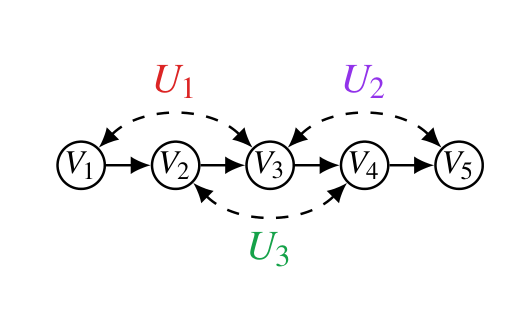
Step 1 — \(U_1\) 추가 (\(V_1, V_3\) 교란)
\(V_1\)과 \(V_3\)를 동시에 가리키는 비관측 변수 \(U_1\)을 추가합니다.
\[ P(v) = \sum_{u_1} P(u_1)\, P(v_1 \mid u_1) P(v_2 \mid v_1) P(v_3 \mid v_2, u_1) P(v_4 \mid v_3) P(v_5 \mid v_4). \]
\(U_1\)이 들어 있지 않은 인자들은 합 밖으로 빼낼 수 있으므로,
\[ P(v) = P(v_2 \mid v_1) P(v_4 \mid v_3) P(v_5 \mid v_4) \cdot \left(\sum_{u_1} P(u_1) P(v_1 \mid u_1) P(v_3 \mid v_2, u_1)\right). \]
- \(V_1\)과 \(V_3\)가 \(U_1\)에 대한 공통의 합 안에 함께 묶여 더 이상 분리되지 않습니다.
Step 2 — \(U_2\) 추가 (\(V_3, V_5\) 교란)
\[ P(v) = \sum_{u_1,u_2} P(u_1,u_2) P(v_1 \mid u_1) P(v_2 \mid v_1) P(v_3 \mid v_2, u_1, u_2) P(v_4 \mid v_3) P(v_5 \mid v_4, u_2). \]
\[ = P(v_2 \mid v_1) P(v_4 \mid v_3) \cdot \left(\sum_{u_1,u_2} P(u_1,u_2) P(v_1 \mid u_1) P(v_3 \mid v_2, u_1, u_2) P(v_5 \mid v_4, u_2)\right). \]
- 이제 \(V_1, V_3, V_5\)가 하나의 거대한 합 안에 묶입니다. \(U_1\)이 \(V_1, V_3\)를, \(U_2\)가 \(V_3, V_5\)를 묶었으므로, \(V_3\)를 매개로 \(V_1\)과 \(V_5\)가 간접적으로 연결된 것입니다.
Step 3 — \(U_3\) 추가 (\(V_2, V_4\) 교란)
\[ P(v) = \sum_u P(u) P(v_1 \mid u_1) P(v_2 \mid v_1, u_3) P(v_3 \mid v_2, u_1, u_2) P(v_4 \mid v_3, u_3) P(v_5 \mid v_4, u_2). \]
\(U_3\)는 \(V_2, V_4\)만 묶으므로, 분포는 결국 두 덩어리로 나뉩니다.
\[ P(v) = \underbrace{\left(\sum_{u_3} P(v_2 \mid v_1, u_3) P(v_4 \mid v_3, u_3) P(u_3)\right)}_{V_2, V_4 \text{ 덩어리}} \cdot \underbrace{\left(\sum_{u_1,u_2} P(u_1,u_2) P(v_1 \mid u_1) P(v_3 \mid v_2, u_1, u_2) P(v_5 \mid v_4, u_2)\right)}_{V_1, V_3, V_5 \text{ 덩어리}}. \]
1.3. 새로운 함수 \(Q\)의 정의
위에서 본 것처럼, 합(\(\sum_u\))으로 이루어진 인자들은 \(P(v,u)\)로 일일이 풀어 쓰기엔 너무 길고 번잡합니다. 그러나 결정적으로, 이 인자들의 구조는 오직 다이어그램의 위상(topology)에서 결정됩니다. 따라서 외생변수를 명시적으로 적지 않고 이 개념을 추상화하는 새로운 함수 \(Q\)를 정의합니다.
\[ \boxed{\;Q[C](c, pa_c) = \sum_{u^{(C)}} P\!\left(u^{(C)}\right) \prod_{V_i \in C} P(v_i \mid pa_i, u_i), \qquad \text{단 } U^{(C)} = \bigcup_{V_i \in C} U_i.\;} \]
- \(C \subseteq V\)는 관측변수의 부분집합이며, \(U^{(C)}\)는 \(C\)에 속한 변수들에 영향을 주는 모든 외생변수의 합집합입니다.
- 이 함수는 “\(C\)에 속한 변수들의 조건부 인자들을, 그들이 공유하는 외생변수에 대해 합한 것”입니다.
이 정의를 이용하면, 앞서 본 다섯 변수 모델의 분해는 다음과 같이 매우 간결해집니다.
\[ P(v) = Q[\{V_2,V_4\}](v_2, v_4, v_1, v_3) \cdot Q[\{V_1,V_3,V_5\}](v_1, v_3, v_5, v_2, v_4). \]
2. C-인자 (C-Factors)
2.1. 표기와 기본 성질
편의상 부모 인자 \((c, pa_c)\)를 생략하고 \(Q[C](c, pa_c)\)를 그냥 \(Q[C]\)로 적겠습니다. 그러면 앞의 예시는 다음처럼 깔끔하게 표현됩니다.
\[ P(v) = Q[\{V_1,V_3,V_5\}]\, Q[\{V_2,V_4\}]. \]
- U 변수를 명시적으로 이름 붙일 필요가 없습니다. \(Q[C]\)라는 표기 자체가 “이 변수 집합에 얽힌 모든 잠재 교란을 합산했다”는 의미를 내포합니다.
기본 성질로 다음 두 가지를 기억해 두면 좋습니다.
- 전체 집합: 전체 변수에 대한 C-인자는 관측 분포 그 자체입니다. \[ Q[V] = \sum_u P(u) \prod_{V_i \in V} P(v_i \mid pa_i, u_i) = P(v). \]
- 공집합 (관례): 일관성을 위해 \(Q[\varnothing] = 1\)로 정의합니다. (이후 나눗셈에서 분모가 됩니다.)
2.2. C-인자는 곧 인과효과입니다 (C-factors are Causal Effects)
이 절은 C-인자라는 추상적 개념에 인과적 의미를 부여하는 핵심입니다.
집합 \(C \subseteq V\)를 생각하고, \(C\)를 제외한 모든 변수가 \(C\)에 미치는 인과효과 \(P(c \mid do(v \setminus c))\)를 살펴봅시다. 절단된 곱 공식(truncated product formula, g-formula) 에 의해,
\[ P(c \mid do(v \setminus c)) = \sum_u P(u) \prod_{V_i \in C} P(v_i \mid pa_i, u_i). \]
- \(do(v \setminus c)\)는 \(C\) 바깥의 변수를 모두 고정하므로, 곱에서 살아남는 인자는 \(C\)에 속한 변수들의 조건부뿐입니다.
이제 \(C\)의 어떤 원소의 부모도 아닌 외생변수들은 모두 합으로 소거(sum out) 할 수 있습니다 (\(\sum_{u} P(u) = 1\)이므로). 따라서 \(C\)에 직접 닿는 외생변수 \(u^{(C)}\)만 남습니다.
\[ P(c \mid do(v \setminus c)) = \sum_{u^{(C)}} \left(\prod_{V_i \in C} P(v_i \mid pa_i, u_i)\right) P\!\left(u^{(C)}\right) = Q[C]. \]
\[ \boxed{\;P(c \mid do(v \setminus c)) = Q[C].\;} \]
즉, C-인자 \(Q[C]\)는 \(C\) 바깥 변수 전체를 개입(do)했을 때 \(C\) 위에 유도되는 인과효과와 정확히 같습니다. 이것이 C-인자와 인과효과를 잇는 핵심 연결고리이며, 이후 모든 식별 논의의 출발점입니다.
2.3. C-인자의 직관적 이해
예시의 C-인자 \(Q[\{V_1,V_3,V_5\}]\)를 펼쳐 보면 다음과 같습니다.
\[ Q[\{V_1,V_3,V_5\}](V_1,V_3,V_5, v_2, v_4) = \sum_{u_1,u_2} P(u_1,u_2)\, P(V_1 \mid u_1) P(V_3 \mid v_2, u_1, u_2) P(V_5 \mid v_4, u_2). \]
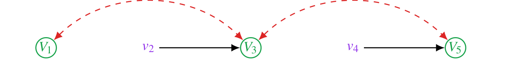
- 대문자 \(V_1, V_3, V_5\)는 이 인자가 함수로서 가지는 변수이고,
- 소문자 \(v_2, v_4\)는 \(C\) 바깥의 부모로서 주어진 값입니다.
2.4. C-인자에서 변수를 주변화하기 (Marginalizing Variables)
C-인자는 어느 정도 확률분포처럼 행동하지만, 항상 그런 것은 아닙니다. 변수를 주변화(합산)할 수 있는지는 그 변수가 인자 내부에서 다른 변수의 부모인지 여부에 달려 있습니다.
경우 1 — 부모가 아닌 변수의 주변화 (성공)
\(Q[\{V_1,V_3,V_5\}]\)에서 \(V_1, V_3, V_5\)는 인자 내부의 다른 변수의 부모가 아니므로 단 하나의 항에만 등장합니다. 예를 들어 \(V_3\)에 대해 합하면,
\[ \sum_{v_3} Q[\{V_1,V_3,V_5\}] = \sum_{v_3} \sum_{u_1,u_2} P(u_1,u_2) P(v_1 \mid u_1) P(v_3 \mid v_2, u_1, u_2) P(v_5 \mid v_4, u_2). \]
\(\sum_{v_3} P(v_3 \mid v_2, u_1, u_2) = 1\)이므로 그 항이 깔끔하게 사라집니다.
\[ = \sum_{u_1,u_2} P(u_1,u_2) P(v_1 \mid u_1) P(v_5 \mid v_4, u_2) = Q[\{V_1,V_5\}]. \]
- 즉, 부모가 아닌 변수를 합하면 그 변수를 단순히 빼낸 C-인자가 됩니다.
경우 2 — 부모인 변수의 주변화 (실패)
이번에는 \(Q[\{V_1,V_2,V_3\}]\)를 보겠습니다. 여기서 \(V_1\)은 \(V_2\)의 부모이므로, \(V_1\)이 조건부 항 \(P(v_2 \mid v_1, u_3)\) 안에 조건으로 등장합니다. \(V_1\)에 대해 합하면,
\[ \sum_{v_1} Q[\{V_1,V_2,V_3\}] = \sum_{v_1} \sum_u P(v_1 \mid u_1) P(v_2 \mid v_1, u_3) P(v_3 \mid v_2, u_1, u_2) P(u). \]
\(V_1\)이 두 항에 걸쳐 있으므로 합이 항들을 가로질러 얽혀 버립니다.
\[ = \sum_{u_1,u_2} P(v_3 \mid v_2, u_1, u_2) P(u_1,u_2) \sum_{v_1} P(v_1 \mid u_1) \sum_{u_3} P(v_2 \mid v_1, u_3) P(u_3). \]
이 결과는 우리가 기대했을 \(Q[\{V_2,V_3\}]\)와 같지 않습니다.
\[ \sum_{v_1} Q[\{V_1,V_2,V_3\}] \;\neq\; \sum_u P(u) P(v_3 \mid v_2, u_1, u_2) P(v_2 \mid v_1, u_3) = Q[\{V_2,V_3\}]. \]
- 핵심 교훈: 어떤 변수가 인자 내부에서 다른 변수의 부모이면, 그것을 단순히 합산해서는 안 됩니다.
앞으로 개발할 두 연산 (Two Operations on C-factors)
이 시점에서 강의는 앞으로 무엇을 만들 것인지를 미리 선언합니다. C-인자를 다루는 도구는 결국 두 개뿐이며, 남은 절들은 그 두 개를 정확한 형태로 다듬는 과정입니다.
- 조상 집합으로 축약하기(Reduce to an ancestral set) — \(Q[C]\)가 주어졌을 때, 조상이 아닌 변수들을 합산해 없애서 더 작은 \(Q[W]\)를 얻습니다. 방금 본 “성공/실패” 사례가 바로 이 연산이 언제 허용되는지를 묻고 있었습니다.
- C-component로 인수분해하기(Factorize into c-components) — \(Q[H]\)가 주어졌을 때, 부분그래프 \(\mathcal{G}[H]\)의 교란 구조에 따라 이를 더 작은 \(Q[H_j]\)들의 곱으로 쪼갭니다.
이 두 연산이 함께 체계적 식별 절차의 골격(backbone) 을 이룹니다. 남은 §2.5–2.8은 각각이 정확히 언제 · 어떤 형태로 성립하는지를 따지는 과정입니다.
2.5. 무엇을 주변화할 수 있는가? — 조상 축약 정리 (Ancestral-Reduction)
그렇다면 정확히 어떤 부분집합으로 안전하게 축약할 수 있을까요? 그 조건이 조상 축약 정리입니다.
\(W \subset C \subseteq V\)라 하자. 만약 \(W\)가 조상적(ancestral) 이라면, 즉 부분그래프 \(\mathcal{G}[C]\) 안에서 \(W\)의 모든 조상 \(An(W)\)를 포함한다면, \[ Q[W] = \sum_{c \setminus w} Q[C]. \]
- 조상적(ancestral) 이라는 말은, \(W\) 안에 어떤 변수의 조상이 \(\mathcal{G}[C]\) 안에 존재한다면 그 조상도 \(W\)에 포함되어 있어야 한다는 뜻입니다.
- 직관적으로, 합산해서 없애려는 변수(\(C \setminus W\))들이 남기려는 변수(\(W\))의 부모/조상이 아니어야 깔끔하게 사라진다는 것입니다.
예시
\(C = \{V_1, V_2, V_3\}\)이고, \(\mathcal{G}[C]\)가 \(V_1 \to V_2 \to V_3\) 사슬이라고 하면,
- \(W = \{V_1, V_2\}\) → 조상적 (이들의 조상 \(V_1, V_2\)가 모두 포함됨)
- \(W = \{V_1\}\) → 조상적 (\(V_1\)은 조상이 없는 뿌리)
- \(W = \{V_2, V_3\}\) → 조상적이 아님 (\(V_2\)의 조상인 \(V_1\)이 누락됨)
세 번째 경우가 바로 앞 절의 “실패” 사례와 일치합니다.
2.6. 교란 성분 (Confounded Components, C-Components)
이제 분해의 단위를 정의할 차례입니다.
두 변수 \(V_i\)와 \(V_j\)가 공통의 비관측 부모 \(U\)를 공유하면, \(P(v_i \mid pa_i, u_i)\)와 \(P(v_j \mid pa_j, u_j)\)는 \(U \in U_i \cap U_j\)에 대한 합으로 서로 묶이게(tied) 됩니다. 이때 \(V_i\)와 \(V_j\)가 같은 교란 성분(C-Component) 에 속한다고 말합니다.
다섯 변수 예시에 적용하면, 잠재 교란 관계는 다음과 같습니다.
- \(V_1\)은 \(U_1\)을 통해 \(V_3\)와 같은 C-component
- \(V_3\)는 \(U_2\)를 통해 \(V_5\)와 같은 C-component
- 추이성(transitivity) 에 의해 \(V_1\)도 \(V_5\)와 같은 C-component
- \(V_2\)는 \(U_3\)를 통해 \(V_4\)와 같은 C-component
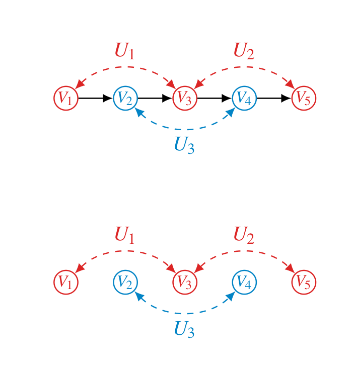
- 쉽게 보는 법: 방향성 간선을 무시하고 양방향(bidirected) 간선만 남긴 그래프를 그리면, 그 연결 성분(connected component) 이 곧 C-component입니다.
- C-component 관계는 반사적(Reflexive), 대칭적(Symmetric), 추이적(Transitive) 이므로, 관측변수 집합 \(V\) 위에 하나의 분할(partition) 을 정의합니다.
2.7. C-Component 인수분해 (Tian의 정리)
C-component를 분해의 단위로 삼으면, 임의의 부분집합에 대한 C-인자를 그 안의 C-component들의 곱으로 쪼갤 수 있습니다.
\(\mathcal{C}(\cdot)\)를 주어진 그래프의 (극대) C-component들의 집합이라 하자. 임의의 \(H \subseteq V\)에 대해, \(\mathcal{G}[H]\)의 C-component를 \(H_1, \dots, H_k\)라 하면, \[ Q[H] = \prod_{H_j \in \mathcal{C}(\mathcal{G}[H])} Q[H_j]. \]
예시: 인과효과로의 해석
다음 그래프를 생각해 봅시다 (\(X, Y, Z_1, Z_2, Z_3\)로 구성).
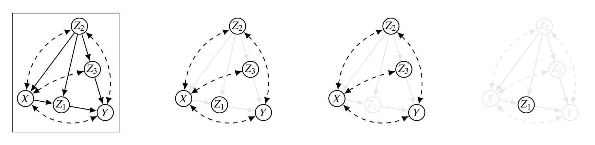
C-component 분해는 다음과 같습니다.
\[ Q[V] = Q[\{Z_2, Z_3, X, Y\}]\, Q[Z_1]. \]
§2.2의 “C-인자 = 인과효과” 해석을 적용하면, 이를 개입 분포의 곱으로 읽을 수 있습니다.
\[ P(v) = P(z_2, z_3, x, y \mid do(z_1))\, P(z_1 \mid do(z_2, z_3, x, y)) = P(z_2, z_3, x, y \mid do(z_1))\, P(z_1 \mid do(z_2, x)). \]
- 마지막 등호는 do-calculus(Rule 3)에 의해 \(z_1\)에 영향을 주지 않는 개입 \(do(z_3, y)\)를 제거한 것입니다.
Tian 정리의 일반형 (위상 순서를 이용한 계산식)
위 곱 분해를 실제로 계산 가능한 형태로 만들어 주는 것이 다음의 일반형입니다.
\(H \subseteq V\)가 주어지고 \(\mathcal{G}[H]\)의 C-component를 \(H_1, \dots, H_k\)라 하자. \(\mathcal{G}[H]\)에 따른 위상 순서(topological order) \(\prec\)를 \[ V_{(1)} \prec V_{(2)} \prec \cdots \prec V_{(|H|)} \] 로 두고, \(H^{\preceq i}\)를 \(V_{(i)}\) 자신을 포함하여 \(V_{(i)}\) 이전에 오는 \(H\)의 변수들이라 하면, \[ Q[H_j] = \prod_{V_{(i)} \in H_j} \frac{Q[H^{\preceq i}]}{Q[H^{\preceq i-1}]}, \qquad Q[H^{\preceq i}] = \sum_{h \succ i} Q[H]. \]
- 핵심 아이디어는 “연쇄 법칙의 C-인자 버전” 입니다. 각 C-component \(H_j\)를, 위상 순서에 따라 누적된 C-인자들의 비(ratio) 의 곱으로 표현합니다.
- \(Q[H^{\preceq i}]\)는 \(V_{(i)}\)보다 뒤에 오는 변수들(\(h \succ i\))을 조상 축약(주변화) 하여 얻습니다.
2.8. 분해 예시: 다섯 변수 모델 끝까지 풀기
\(H = V\)로 두고, \(C\)-component가 \(\{V_1, V_3, V_5\}\)와 \(\{V_2, V_4\}\)임을 이용합니다.
\[ Q[V] = Q[\{V_1,V_3,V_5\}]\, Q[\{V_2,V_4\}]. \]
\(Q[\{V_1,V_3,V_5\}]\) 계산
위상 순서 \(V_1 \prec V_2 \prec V_3 \prec V_4 \prec V_5\)에서, 성분 \(\{V_1,V_3,V_5\}\)에 속한 각 변수에 대해 비를 곱합니다.
\[ Q[\{V_1,V_3,V_5\}] = \frac{Q[\{V_1\}]}{Q[\{\,\}]} \cdot \frac{Q[\{V_3,V_2,V_1\}]}{Q[\{V_2,V_1\}]} \cdot \frac{Q[\{V_5,V_4,V_3,V_2,V_1\}]}{Q[\{V_4,V_3,V_2,V_1\}]}. \]
각 \(Q[H^{\preceq i}]\)를 \(\sum_{h \succ i} Q[V]\)로 바꿔 씁니다.
\[ = \frac{\sum_{v_2,v_3,v_4,v_5} Q[V]}{\sum_{v} Q[V]} \cdot \frac{\sum_{v_4,v_5} Q[V]}{\sum_{v_3,v_4,v_5} Q[V]} \cdot \frac{\sum_{\varnothing} Q[V]}{\sum_{v_5} Q[V]}. \]
\(Q[V] = P(v)\)이므로 전부 관측 분포로 환원됩니다.
\[ = \frac{\sum_{v_2,v_3,v_4,v_5} P(v)}{\sum_{v} P(v)} \cdot \frac{\sum_{v_4,v_5} P(v)}{\sum_{v_3,v_4,v_5} P(v)} \cdot \frac{\sum_{\varnothing} P(v)}{\sum_{v_5} P(v)}. \]
각 항을 주변분포로 정리하면,
\[ = \frac{P(v_1)}{1} \cdot \frac{P(v_1, v_2, v_3)}{P(v_1, v_2)} \cdot \frac{P(v)}{P(v_1, v_2, v_3, v_4)}. \]
\[ \boxed{\;Q[\{V_1,V_3,V_5\}] = P(v_1)\, P(v_3 \mid v_1, v_2)\, P(v_5 \mid v_1, v_2, v_3, v_4).\;} \]
- 비록 \(\{V_1, V_3, V_5\}\)가 잠재 교란으로 얽혀 있었지만, 그 C-인자가 온전히 관측 분포의 조건부 곱으로 식별되었음을 확인할 수 있습니다.
\(Q[\{V_2,V_4\}]\) 계산
\[ Q[\{V_2,V_4\}] = \frac{Q[\{V_2,V_1\}]}{Q[\{V_1\}]} \cdot \frac{Q[\{V_4,V_3,V_2,V_1\}]}{Q[\{V_3,V_2,V_1\}]} = P(v_2 \mid v_1)\, P(v_4 \mid v_1, v_2, v_3). \]
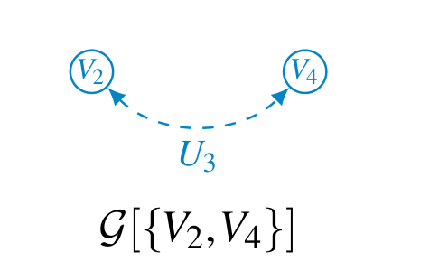
- \(\mathcal{G}[\{V_2,V_4\}]\)에서는 \(V_2 \prec V_4\)와 \(V_4 \prec V_2\) 두 순서가 모두 유효하며, 어느 쪽을 택해도 결과는 같습니다.
이로부터 개별 변수의 C-인자도 조상 축약으로 얻을 수 있습니다.
\[ Q[\{V_2\}] = \sum_{v_4} Q[\{V_2,V_4\}] = \sum_{v_4} P(v_2 \mid v_1) P(v_4 \mid v_1, v_2, v_3) = P(v_2 \mid v_1)\underbrace{\sum_{v_4} P(v_4 \mid v_1,v_2,v_3)}_{=1} = P(v_2 \mid v_1). \]
\[ Q[\{V_4\}] = \sum_{v_2} Q[\{V_2,V_4\}] = \sum_{v_2} P(v_2 \mid v_1) P(v_4 \mid v_1, v_2, v_3). \]
- 주의: \(Q[\{V_2\}]\)는 \(V_2\)가 \(V_4\)의 부모가 아니어서 \(V_4\)를 깔끔히 합산할 수 있었지만, \(Q[\{V_4\}]\)를 구할 때 \(V_2\)는 \(V_4\)의 부모이므로 합이 완전히 떨어지지 않고 \(v_2\)에 대한 평균 형태로 남습니다.
3. 시각화 (Visualization)
지금까지의 두 연산(조상 축약과 C-component 인수분해)을 반복 적용하면, \(Q[V]\)로부터 더 작은 C-인자들을 체계적으로 끌어낼 수 있습니다. 이 과정을 트리로 시각화하면 다음과 같습니다.
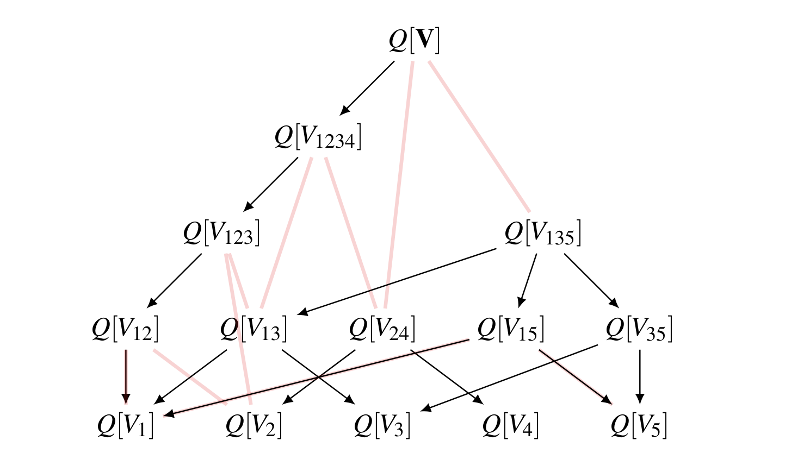
- 왼쪽 사슬: \(Q[V] \to Q[V_{1234}] \to Q[V_{123}] \to Q[V_{12}] \to Q[V_1]\) — 변수를 뒤에서부터 하나씩 조상 축약.
- 옆으로의 분기: \(Q[V] \to Q[V_{135}] \cdot Q[V_{24}]\) 등 — C-component 인수분해.
- 표어: “Once factorized, it cannot be factorized further. Summation is commutative.” (한번 곱으로 분해되면 더는 분해되지 않으며, 그 뒤로 남는 합산은 순서를 바꿔도 결과가 같습니다.)
C-인자 대수 요약 (C-factor Algebra — Summary)
C-인자에 대한 두 가지 기본 연산으로 모든 것이 정리됩니다.
- 1. 조상 집합으로 축약 (Reduce to an ancestral set) \[ Q[W] = \sum_{c \setminus w} Q[C] \qquad (\text{단, } W\text{가 } \mathcal{G}[C]\text{에서 조상적일 때}). \]
- 2. C-component로 인수분해 (Factorize into c-components) \[ Q[H] = \prod_j Q[H_j] \qquad (H_1, \dots, H_k\text{는 } \mathcal{G}[H]\text{의 C-component}). \]
이 인수분해는 식별가능성에 대한 필요충분(if-and-only-if) 조건을 제공합니다. 이것이 do-calculus에 비한 이 접근의 결정적 강점입니다.
4. C-인자를 이용한 인과 질의의 표현: 예시
이제 친숙한 식별 시나리오들을 C-인자 언어로 다시 풀어 보며, 이 도구의 위력을 확인하겠습니다.
4.1. Back-door (뒷문) 사례
\(Z\)가 \(X\)와 \(Y\)의 공통 원인인 전형적인 교란 구조입니다.
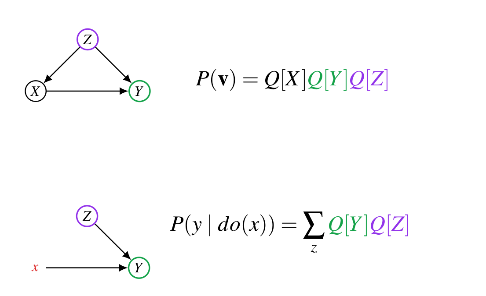
개입 전 그래프에서 \(X, Y, Z\)는 각자 독립적인 외생변수만 가지므로 모두 별개의 C-component입니다.
\[ P(x,y,z) = \sum_u P(x,y,z,u) = \left(\sum_{u_x} P(x \mid z, u_x) P(u_x)\right) \left(\sum_{u_y} P(y \mid x, z, u_y) P(u_y)\right) \left(\sum_{u_z} P(z \mid u_z) P(u_z)\right) = Q[X]\,Q[Y]\,Q[Z]. \]
\(do(x)\)를 가한 모델 \(P'\)에서는 \(X\)가 외부에서 고정되어 \(Q[X]\)가 자명(\(P'(x)=1\))해지므로,
\[ P'(x,y,z) = Q[Y]\,Q[Z] \quad\Longrightarrow\quad P(y \mid do(x)) = \sum_z Q[Y]\,Q[Z]. \]
이제 각 C-인자를 관측 분포로 식별합니다.
\[ Q[Y] = \frac{Q[\{X,Y,Z\}]}{Q[\{X,Z\}]} = \frac{P(v)}{\sum_y P(v)} = P(y \mid x, z), \] \[ Q[Z] = \sum_{x,y} Q[\{X,Y,Z\}] = P(z). \]
따라서 익숙한 조정 공식(adjustment formula) 을 얻습니다.
\[ \boxed{\;P(y \mid do(x)) = \sum_z P(y \mid z, x)\, P(z).\;} \]
4.2. Front-door (앞문) 사례
\(X\)와 \(Y\)가 잠재변수로 교란되어 있지만, 그 사이를 완전 매개하는 \(Z\)가 있는 구조입니다 (\(X \to Z \to Y\), 그리고 \(X \leftrightarrow Y\)).
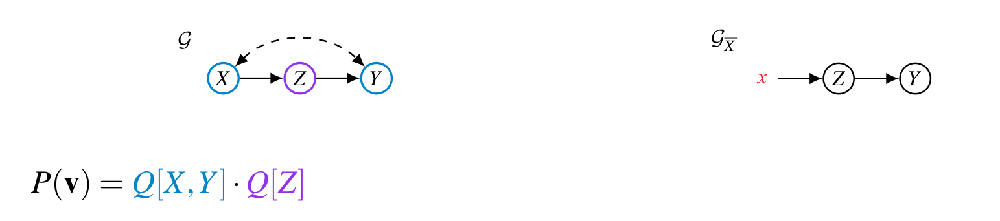
C-component는 \(\{X, Y\}\)(양방향 교란)와 \(\{Z\}\)로 나뉩니다.
\[ P(v) = Q[X,Y] \cdot Q[Z]. \]
질의는 \(G_X\)에서 \(Z, Y\)에 대한 결합 개입 분포로 표현됩니다.
\[ P(y \mid do(x)) = \sum_z P(y, z \mid do(x)) = \sum_z Q[Y,Z] = \sum_z Q[Y]\,Q[Z]. \]
(마지막 등호는 \(Y\)와 \(Z\)가 서로 다른 C-component이므로 인수분해됨을 이용했습니다.) 이제 각 인자를 식별합니다.
\[ Q[X,Y] = \frac{Q[X]}{Q[\varnothing]} \cdot \frac{Q[X,Z,Y]}{Q[X,Z]} = P(x)\,P(y \mid x, z), \] \[ Q[Z] = \frac{Q[X,Z]}{Q[X]} = P(z \mid x). \]
\(\{Y\}\)가 \(\mathcal{G}[\{X,Y\}]\)에서 조상적이므로 (\(X\)는 \(\{X,Y\}\) 부분그래프에서 \(Y\)의 부모가 아님 — 둘은 양방향으로만 연결), \(X\)를 주변화하여,
\[ Q[Y] = \sum_x Q[X,Y] = \sum_x P(x)\,P(y \mid x, z). \]
이를 종합하면 앞문 공식(front-door formula) 이 그대로 도출됩니다.
\[ \boxed{\;P(y \mid do(x)) = \sum_z Q[Y]\,Q[Z] = \sum_z P(z \mid x) \sum_{x'} P(x')\, P(y \mid x', z).\;} \]
4.3. Napkin (냅킨) 사례
냅킨 문제는 Back-door도 Front-door도 직접 적용되지 않는 까다로운 구조로, C-인자 대수의 진가가 드러나는 예시입니다. 방향성 골격은 \(W_1 \to W_2 \to X \to Y\)이며, 잠재 교란이 \(W_1, X, Y\)를 하나의 C-component로 묶습니다.
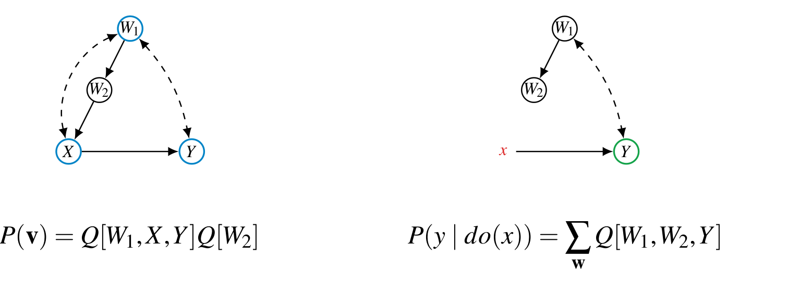
C-component 분해는 다음과 같습니다.
\[ P(v) = Q[W_1, X, Y]\, Q[W_2]. \]
질의의 환원
\[ P(y \mid do(x)) = \sum_w Q[W_1, W_2, Y]. \]
\(\{Y\}\)가 \(\mathcal{G}[\{W_1, W_2, Y\}]\)에서 조상적이므로 (\(Y\)가 가장 후손), \(W_1, W_2\)를 주변화하면,
\[ P(y \mid do(x)) = Q[\{Y\}]. \]
문제는 \(Q[\{Y\}]\)를 관측 분포로부터 얻을 수 있는가입니다. \(Q[W_1, X, Y]\)는 \(Q[V]\)로부터 계산 가능하므로, 여기서 \(Q[Y]\)를 끌어낼 수 있는지가 관건입니다.
냅킨 풀기 (Solving the Napkin)
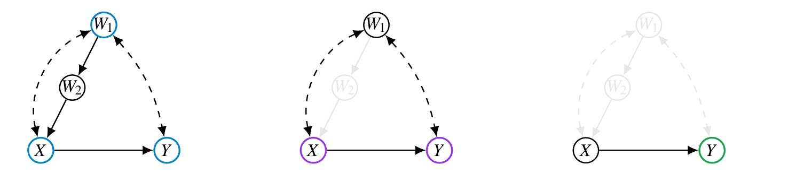
Identify 함수로 일반화됩니다.먼저 \(Q[W_1, X, Y]\)를 Tian 정리로 전개합니다.
\[ Q[W_1, X, Y] = \frac{Q[W_1]}{Q[\varnothing]} \cdot \frac{Q[W_1, W_2, X]}{Q[W_1, W_2]} \cdot \frac{Q[W_1, W_2, X, Y]}{Q[W_1, W_2, X]} = P(w_1)\, P(x \mid w_1, w_2)\, P(y \mid w_1, w_2, x). \]
부분그래프 \(\mathcal{G}[\{W_1, X, Y\}]\) 안에서 \(W_1\)은 (\(W_2\)가 빠졌으므로) \(X\)의 부모가 아니어서 \(\{X, Y\}\)가 조상적입니다. 따라서 \(W_1\)을 안전하게 주변화하여 \(Q[X,Y]\)를 얻습니다.
\[ Q[X, Y] = \sum_{w_1} Q[W_1, X, Y] = \sum_{w_1} P(w_1)\, P(x \mid w_1, w_2)\, P(y \mid w_1, w_2, x). \]
\(\mathcal{G}[\{X,Y\}]\)에서 \(X\)와 \(Y\)는 더 이상 양방향으로 묶이지 않으므로(잠재 교란의 통로였던 \(W_1\)이 제거됨) 별개의 C-component가 되어,
\[ Q[X, Y] = Q[X]\,Q[Y]. \]
따라서 \(Q[Y]\)를 비(ratio)로 분리할 수 있습니다.
\[ Q[Y] = \frac{Q[X,Y]}{Q[X]} = \frac{Q[X,Y]}{\sum_y Q[X,Y]} = \frac{\sum_{w_1} P(w_1) P(x \mid w_1, w_2) P(y \mid w_1, w_2, x)}{\sum_{w_1} P(w_1) P(x \mid w_1, w_2)} = P(y \mid do(x)). \]
\[ \boxed{\;P(y \mid do(x)) = \frac{\sum_{w_1} P(w_1)\, P(x \mid w_1, w_2)\, P(y \mid w_1, w_2, x)}{\sum_{w_1} P(w_1)\, P(x \mid w_1, w_2)}.\;} \]
비교: do-calculus로 푼 냅킨
같은 결과를 do-calculus로 유도하면 다음과 같습니다. 단계마다 어떤 규칙을 쓰는지 명시했습니다.
\[ \begin{aligned} P(y \mid do(x)) &= P(y \mid do(x, w_1, w_2)) && \text{(Rule 3: 무관한 개입 추가)}\\ &= P(y \mid x, do(w_1, w_2)) && \text{(Rule 2: 개입}\to\text{관측)}\\ &= \frac{P(y, x \mid do(w_1, w_2))}{P(x \mid do(w_1, w_2))} \\ &= \frac{P(y, x \mid do(w_2))}{P(x \mid do(w_2))} && \text{(Rule 3: } do(w_1)\text{ 제거)}\\ &= \frac{\sum_{w_1} P(y, x \mid do(w_2), w_1)\, P(w_1 \mid do(w_2))}{\sum_{w_1} P(x \mid do(w_2), w_1)\, P(w_1 \mid do(w_2))} \\ &= \frac{\sum_{w_1} P(y, x \mid w_2, w_1)\, P(w_1)}{\sum_{w_1} P(x \mid w_2, w_1)\, P(w_1)}. && \text{(Rule 2 and 3)} \end{aligned} \]
- 두 결과가 정확히 일치합니다. C-인자 접근은 do-calculus와 동일한 답을 주되, 어떤 인자를 어떤 순서로 식별할지를 알고리즘적으로 지시해 준다는 점에서 더 구성적입니다.
4.4. 세 예시를 한눈에 (Identifying Causal Effects via C-factors: Overview)
지금까지 푼 세 가지 예시는 난이도가 다르지만, 사실 같은 두 연산을 몇 번 적용하느냐만 달랐습니다. 강의는 이를 나란히 놓고 비교합니다.
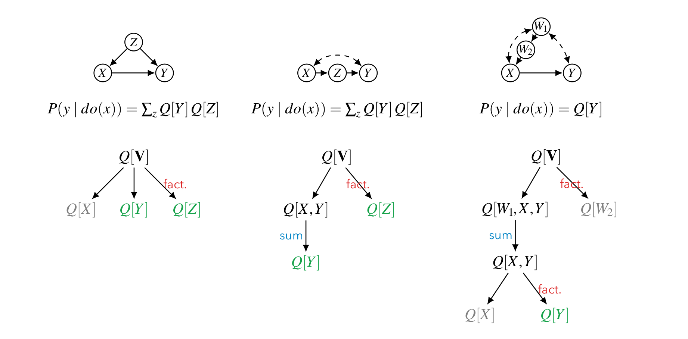
fact. 라벨이 붙은 화살표는 C-component 인수분해를, 파란 sum 라벨이 붙은 화살표는 조상 축약(주변화)을 뜻하며, 노드 색은 그 인자가 최종 답에 쓰이는지를 나타냅니다 — 초록은 실제로 사용되는 인자, 회색은 개입으로 사라져 쓰이지 않는 인자입니다. 왼쪽 뒷문에서는 \(Q[\mathbf{V}]\) 한 번의 인수분해로 곧장 \(Q[X], Q[Y], Q[Z]\)가 갈라져 깊이가 1이고, 가운데 앞문에서는 인수분해로 \(Q[X,Y]\)를 얻은 뒤 한 번 더 합산해야 \(Q[Y]\)에 닿아 깊이가 2이며, 오른쪽 냅킨에서는 인수분해 → 합산 → 다시 인수분해까지 세 단계를 거쳐야 \(Q[Y]\)에 도달합니다. 세 트리를 겹쳐 보면 난이도의 차이가 트리의 깊이로만 나타날 뿐 사용하는 연산의 종류는 두 가지로 동일하다는 점이 드러나며, 이것이 다음 절에서 이 과정을 재귀 함수 하나로 자동화할 수 있는 이유입니다.- Back-door: \(Q[V] \xrightarrow{\text{fact.}} Q[X],\,Q[Y],\,Q[Z]\) — 인수분해 한 번.
- Front-door: \(Q[V] \xrightarrow{\text{fact.}} Q[X,Y],\,Q[Z] \xrightarrow{\text{sum}} Q[Y]\) — 인수분해 후 축약.
- Napkin: \(Q[V] \xrightarrow{\text{fact.}} Q[W_1,X,Y],\,Q[W_2] \xrightarrow{\text{sum}} Q[X,Y] \xrightarrow{\text{fact.}} Q[X],\,Q[Y]\) — 두 연산을 교대로.
이 관찰이 다음 절의 출발점입니다. 두 연산을 번갈아 적용하다가 더 이상 진전이 없으면 멈춘다 — 이것을 그대로 코드로 옮기면 일반 식별 알고리즘이 됩니다.
5. 일반적 접근 (A General Approach)
5.1. 일반 식별 알고리즘 (A General Identification Algorithm)
그래프 \(\mathcal{G}\)와 질의 \(P(y \mid do(x))\)가 주어졌을 때의 일반 절차를 정리합니다.
1단계 — 무관한 변수 잘라내기 (Rule 3로 개입을 확장하기)
출발점은 do-calculus의 Rule 3입니다. \(Y\)에 아무 영향도 주지 못하는 변수라면 그것에 개입하든 말든 \(Y\)의 분포는 바뀌지 않으므로, \(do(x)\) 안에 그런 변수들을 공짜로 끼워 넣을 수 있습니다. 구체적으로 다음 두 부류가 그렇습니다.
- \(Y\)의 비후손(non-descendant) — 애초에 \(Y\)에 닿지 못합니다.
- \(Y\)에 오직 \(X\)를 거쳐서만 영향을 주는 변수 — \(X\)가 이미 고정된 상태이므로 통로가 막혀 있습니다.
이 두 부류를 한꺼번에 표현하는 것이 \(\mathbf{V} \setminus An(Y)_{\mathcal{G}_{\underline{X}}}\)입니다. 여기서 \(\mathcal{G}_{\underline{X}}\)는 \(X\)에서 나가는 간선을 잘라낸 그래프이므로, 그 안에서 \(Y\)의 조상으로 남아 있다는 것은 곧 “\(X\)를 우회해서도 \(Y\)에 닿는다”는 뜻입니다.
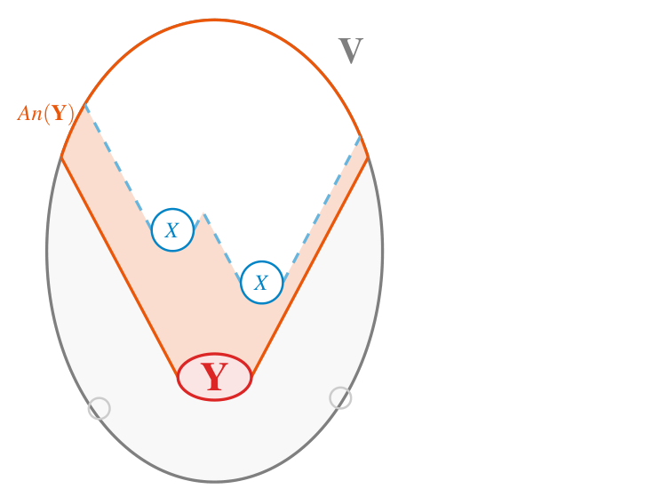
Rule 3로 이 변수들을 개입 쪽으로 넘기면 질의가 다음과 같이 다시 쓰입니다.
\[ P(y \mid do(x)) = \sum_{An(Y)_{\mathcal{G}_{\underline{X}}} \setminus Y} P\!\left(An(Y)_{\mathcal{G}_{\underline{X}}} \;\middle|\; do\!\left(V \setminus An(Y)_{\mathcal{G}_{\underline{X}}}\right)\right). \]
- 우변은 “어떤 집합 바깥 전체를 개입했을 때 그 집합 위에 남는 분포”의 형태입니다. §2.2에서 본 대로 이것이 정확히 C-인자의 정의이므로, 질의가 통째로 하나의 C-인자로 바뀐 셈입니다.
2단계 — C-인자로 환원하고 인수분해하기
이제 관련 변수 집합에 이름을 붙입니다.
\[ \mathbf{C} = An(Y)_{\mathcal{G}_{\underline{X}}}. \]
그러면 질의는 다음과 같이 표현됩니다.
\[ P(y \mid do(x)) = \sum_{v \setminus (x \cup y)} Q[V \setminus X] = \sum_{c \setminus y} Q[\mathbf{C}]. \]
만약 부분그래프 \(\mathcal{G}[\mathbf{C}]\)가 C-component \(C_1, C_2, \dots, C_k\)를 가진다면, Tian 인수분해에 의해
\[ \boxed{\;P(y \mid do(x)) = \sum_{c \setminus y} \prod_i Q[C_i].\;} \]
한편 분자 쪽 재료도 준비되어 있습니다. 원래 그래프 \(\mathcal{G}\) 자체의 C-component를 \(T_1, \dots, T_\ell\)이라 하면, 관측 분포는 이미 다음과 같이 분해되어 있기 때문입니다.
\[ P(V) = \prod_i Q[T_i]. \]
- 즉 우리에게는 \(Q[T_i]\)들이 관측 분포로부터 공짜로 주어져 있고, 필요한 것은 \(Q[C_i]\)들입니다.
- 따라서 전체 식별 문제는 “\(C_i\)를 품고 있는 \(T_i\)의 C-인자 \(Q[T_i]\)로부터 \(Q[C_i]\)를 계산할 수 있는가” 라는 부분 문제들의 모음으로 환원됩니다.
앞선 §4의 예시들에서 개입 후 그래프를 \(\mathcal{G}_{\overline{X}}\)(윗줄)로 적었던 것과 달리, 여기서는 아랫줄 \(\mathcal{G}_{\underline{X}}\)가 쓰입니다. 둘은 다른 연산입니다.
- \(\mathcal{G}_{\overline{X}}\) — \(X\)로 들어오는 간선을 자릅니다. \(do(x)\)의 그래프적 대응물입니다.
- \(\mathcal{G}_{\underline{X}}\) — \(X\)에서 나가는 간선을 자릅니다. “\(X\)를 거치지 않는 경로만 남긴다”는 뜻이며, 그래서 이 그래프에서의 \(An(Y)\)가 곧 “\(X\)를 우회해서 \(Y\)에 영향을 주는 변수들”이 됩니다.
관련 집합을 잡을 때 \(\overline{X}\)를 쓰면 \(X\)의 후손이 전부 살아남아 \(\mathbf{C}\)가 불필요하게 커집니다. 원본 강의 자료의 표기는 \(\mathcal{G}_{\underline{X}}\)입니다.
5.2. Identify 함수
각 부분 문제를 푸는 재귀 함수가 Identify입니다. 이 함수는 \(Q[T]\)가 주어졌을 때 \(Q[C]\)를 계산할 수 있는지를 판정합니다 (\(C \subseteq T\)).
Identify(C, T, Q, G):
A = An(C)_{G[T]} # T로 제한한 그래프에서 C의 조상 집합
if A == C: # (조상 축약으로 끝)
return Q[C] = ∑_{t \ c} Q[T]
if A == T: # (더 줄일 수 없음 → 식별 실패)
return FAIL
# 이하: C ⊊ A ⊊ T 인 경우
A_i = (G[A]에서 C를 포함하는 C-component)
Q[A_i] 를 Q[T] 로부터 계산 # C-component 인수분해
return Identify(C, A_i, Q[A_i], G) # 더 작은 T = A_i 로 재귀이 함수는 §3에서 정리한 두 연산만을 번갈아 적용합니다.
A == C이면 조상 축약만으로 \(Q[C]\)를 얻을 수 있으므로 성공적으로 반환합니다.A == T이면 더 이상 줄일 여지가 없으므로 식별 실패(Fail) 를 반환합니다. (이 지점이 바로 “헤지(hedge)”라 불리는 식별 불가능성의 증거에 해당합니다.)- 그 외에는 C-component 인수분해로 \(C\)를 품은 더 작은 성분 \(A_i\)를 떼어내어, \(T \leftarrow A_i\)로 재귀합니다. 매 단계에서 \(T\)가 엄격히 작아지므로 알고리즘은 반드시 종료합니다.
5.3. 완전성 (Completeness)
이 알고리즘이 단지 “충분조건”이 아니라 식별가능성의 완전한 판정기임을 보장하는 것이 다음 정리입니다.
\(P(y \mid do(x))\)가 \(\mathcal{G}\)와 \(P(V)\)로부터 식별 가능한 것은 다음과 필요충분이다: 각 C-인자 \(Q[C_i]\)가 \[ \texttt{Identify}(C_i, T_i, Q[T_i], \mathcal{G}) \] 에 의해 식별된다. 여기서 \(T_i\)는 \(C_i\)를 포함하는 \(\mathcal{G}\)의 C-component이다.
- 즉, 알고리즘이 어느 한 \(C_i\)에서라도
FAIL을 반환하면 그 인과효과는 이론적으로 식별 불가능합니다. 어떤 영리한 do-calculus 적용으로도 식별할 수 없습니다. - 이 결과는 이후 Huang & Valtorta (2006), Shpitser & Pearl (2006)의 연구로도 (do-calculus 규칙 적용의 완전성 형태로) 확인되었습니다.
5.4. Identify를 그림으로 읽기 (Visualizing the Identify Algorithm)
의사코드의 세 갈래는 집합 그림으로 옮기면 훨씬 직관적입니다. 출발 상황은 언제나 “바깥 집합 \(T\)의 C-인자 \(Q[T]\)는 손에 있는데, 그 안쪽 집합 \(C\)의 C-인자 \(Q[C]\)를 원한다”입니다. 여기서 \(A = An(C)_{\mathcal{G}[T]}\)가 어디에 놓이느냐에 따라 세 경우가 갈립니다.
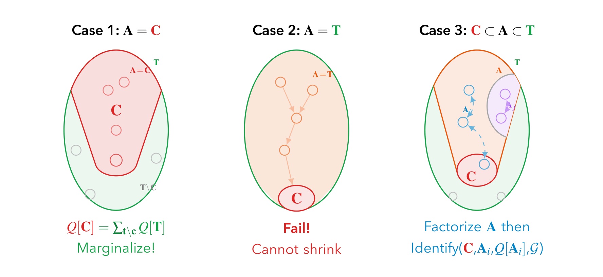
Identify의 세 갈래를 집합 다이어그램으로 나란히 보여 줍니다. 세 패널 모두에서 초록 타원이 바깥 집합 \(\mathbf{T}\), 빨간 영역이 목표 집합 \(\mathbf{C}\), 주황 영역이 \(\mathbf{A} = An(\mathbf{C})_{\mathcal{G}[\mathbf{T}]}\)이며, 작은 동그라미는 개별 변수를 나타냅니다. Case 1 (\(\mathbf{A} = \mathbf{C}\)): 조상 집합이 \(\mathbf{C}\)와 정확히 일치해 빨간 영역이 곧 주황 영역입니다. \(\mathbf{C}\) 바깥의 회색 변수들(\(\mathbf{T} \setminus \mathbf{C}\))은 \(\mathbf{C}\)의 조상이 아니므로 그냥 합산해 없앨 수 있고, \(Q[\mathbf{C}] = \sum_{t \setminus c} Q[\mathbf{T}]\)로 끝납니다. Case 2 (\(\mathbf{A} = \mathbf{T}\)): 주황 영역이 초록 타원 전체를 채우고 있습니다. 주황 화살표들이 보여 주듯 \(\mathbf{T}\)의 모든 변수가 \(\mathbf{C}\)의 조상이라 합산해 없앨 변수가 하나도 없고, \(\mathbf{T}\)가 이미 하나의 C-component라 더 쪼갤 수도 없으므로 Fail입니다. Case 3 (\(\mathbf{C} \subset \mathbf{A} \subset \mathbf{T}\)): 주황 영역이 초록보다는 작고 빨강보다는 큽니다. 이때 \(\mathbf{A}\)를 C-component로 인수분해하면 보라색 \(\mathbf{A}_j\) 등이 떨어져 나가고 \(\mathbf{C}\)를 품은 파란 \(\mathbf{A}_i\)만 남으므로, 그것을 새 \(\mathbf{T}\)로 삼아 재귀합니다. 세 패널을 관통하는 논리는 “먼저 합산으로 줄여 보고, 안 되면 인수분해로 줄이고, 둘 다 안 되면 포기”라는 단순한 우선순위입니다.- Case 1 — \(A = C\): 합산만으로 도달. \(Q[C] = \sum_{t \setminus c} Q[T]\)를 반환합니다.
- Case 2 — \(A = T\): 주변화할 것도 없고 인수분해할 것도 없으므로 Fail.
- Case 3 — \(C \subset A \subset T\): \(A\)를 인수분해해 \(C\)를 품은 \(A_i\)를 얻고, 그것을 새로운 \(T\)로 삼아 재귀합니다.
세 번째 경우가 알고리즘의 엔진입니다. 재귀가 한 번 돌 때마다 작업 대상 \(T\)가 어떻게 줄어드는지를 보면 종료성이 눈에 보입니다.
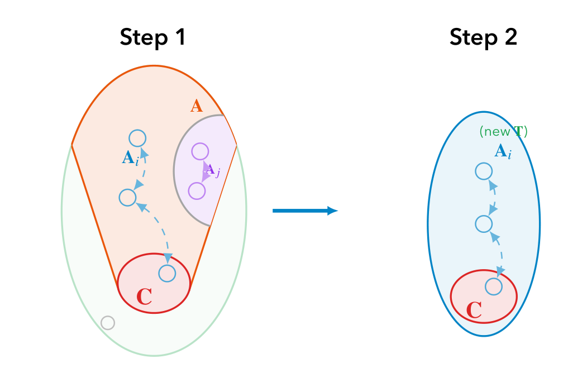
(new T) 라벨과 함께 새로운 작업 대상이 됩니다. 오른쪽 그림이 왼쪽보다 눈에 띄게 작다는 사실 자체가 요점인데, 매 재귀마다 \(\mathbf{T}\)가 엄격히 작아지므로 유한 그래프에서 알고리즘이 반드시 종료한다는 보장이 여기서 나옵니다.- 매 재귀에서 \(T\)는 자신의 진부분집합인 \(A_i\)로 교체되므로, \(|T|\)가 단조 감소하며 유한 단계 안에 Case 1 또는 Case 2에 반드시 도달합니다.
정리하며 (Closing Remarks)
이번 강의의 논증은 “분포를 쪼갠다 → 조각에 인과적 의미를 준다 → 조각을 다루는 연산을 정한다 → 그 연산으로 알고리즘을 짠다 → 그 알고리즘이 최선임을 증명한다”라는 다섯 박자로 진행되었습니다. 단계별로 압축하면 다음과 같습니다.
| 단계 | 내용 | 근거 |
|---|---|---|
| ① 문제 제기 | 백도어·앞문은 특정 구조에만 통하는 충분조건이고, do-calculus는 완전하지만 비구성적이다 | Roadmap |
| ② 마르코프 모델 확인 | 외생변수가 공유되지 않으면 \(P(v) = \prod_i P(v_i \mid pa_i)\)로 완전 분리되어 항상 식별 가능하다 | Markovian Case |
| ③ 분해가 깨지는 지점 | 잠재 교란 \(U\) 하나가 두 변수를 공통의 \(\sum_u\) 안에 가두어 분리를 막는다 | semi-Markovian Case |
| ④ 새 언어 도입 | 갇힌 덩어리를 통째로 이름 붙인다: \(Q[C](c, pa_c) = \sum_{u^{(C)}} P(u^{(C)}) \prod_{V_i \in C} P(v_i \mid pa_i, u_i)\) | 함수 \(Q\)의 정의 |
| ⑤ 의미 부여 | \(Q[C] = P(c \mid do(v \setminus c))\) — C-인자는 추상적 기호가 아니라 그 자체가 인과효과다 | 절단된 곱 공식 |
| ⑥ 연산 ① | 없앨 변수가 남길 변수의 조상이 아닐 때만 합산이 허용된다: \(Q[W] = \sum_{c \setminus w} Q[C]\) | Lemma (Ancestral-Reduction) |
| ⑦ 분해 단위 확정 | 양방향 간선 그래프의 연결 성분이 C-component이며, 이는 \(V\) 위의 분할을 이룬다 | Definition (C-component) |
| ⑧ 연산 ② | \(Q[H] = \prod_j Q[H_j]\), 그리고 위상 순서를 쓰면 \(Q[H_j] = \prod_{V_{(i)} \in H_j} Q[H^{\preceq i}] / Q[H^{\preceq i-1}]\)로 계산 가능해진다 | Lemma (Tian, 2002) |
| ⑨ 예시로 검증 | 뒷문·앞문·냅킨이 모두 두 연산의 조합으로 풀리며, 냅킨의 답은 do-calculus 유도와 정확히 일치한다 | §4.1–4.4 |
| ⑩ 문제 환원 | \(\mathbf{C} = An(Y)_{\mathcal{G}_{\underline{X}}}\)로 범위를 줄이면 질의는 \(\sum_{c \setminus y} \prod_i Q[C_i]\)가 되고, 재료 \(Q[T_i]\)는 \(P(V)\)에서 공짜로 나온다 | Rule 3 확장 |
| ⑪ 알고리즘화 | Identify(C, T, Q[T], G)가 “합산 → 인수분해 → 재귀 → 실패”의 세 갈래로 각 부분 문제를 판정한다 |
Identify 함수 |
| ⑫ 최선임을 증명 | 이 판정은 필요충분이다 — FAIL이면 어떤 do-calculus 유도로도 식별할 수 없다 |
Theorem (Tian, 2002) |
개인적인 감상 몇 가지를 덧붙입니다.
- 가장 인상적인 지점은 ⑤, 즉 \(Q[C] = P(c \mid do(v \setminus c))\)라는 한 줄입니다. \(Q[C]\)는 처음에 “식이 너무 길어서 줄여 쓰려고” 도입된 순수한 표기상의 편의였습니다. 그런데 절단된 곱 공식을 한 번 적용하는 순간, 그 편의가 사실은 개입 분포 그 자체였음이 드러납니다. 표기를 위해 만든 그릇이 알고 보니 우리가 계산하려던 대상과 같은 것이었다는 이 반전이, 이후의 모든 조작을 “기호 놀음”이 아니라 “인과적으로 의미 있는 조작”으로 만들어 줍니다. 좋은 정의 하나가 증명 열 개의 일을 한다는 말이 실감나는 대목입니다.
- do-calculus와의 관계 설정도 짚어 둘 만합니다. 냅킨을 두 가지 방법으로 풀어 보인 §4.3의 배치가 특히 좋았는데, do-calculus 유도는 여섯 줄이면 끝나지만 “왜 하필 Rule 3으로 \(w_1, w_2\)를 끼워 넣을 생각을 하는가” 에 대해서는 아무 말도 해 주지 않습니다. 반면 C-인자 접근은 매 단계에서 “지금 손에 있는 인자에서 합산이 가능한가, 아니면 인수분해가 가능한가”만 물으면 되므로 탐색이 필요 없습니다. 같은 답에 도달하더라도, 답을 찾는 데 영리함이 필요한 방법과 필요 없는 방법 사이의 차이는 결정적입니다.
- 완전성의 의미를 정확히 새길 필요가 있습니다. ⑫는 “우리 알고리즘이 잘 작동한다”는 자랑이 아니라, 식별 불가능성을 증명하는 도구를 준다는 점에서 값집니다. 어떤 인과 질의 앞에서 답을 못 찾고 있을 때, 그것이 내 능력의 한계인지 문제 자체의 한계인지를 구분할 수 있게 되는 것이니까요. 실무적으로는 “이 관측 데이터로는 답이 없으니 실험을 설계하거나 가정을 추가하라”는 결론을 정당하게 내릴 수 있게 해 준다는 뜻입니다.
- 분할(partition)이라는 구조가 하는 일도 다시 보게 됩니다. C-component가 단순한 그룹핑이 아니라 반사적·대칭적·추이적인 동치관계라는 사실이 §2.6에서 거의 지나가듯 언급되는데, 실은 이것이 전체 이론의 하중을 받는 기둥입니다. 분할이기 때문에 겹치는 성분이 없고, 겹치지 않기 때문에 각 인자를 독립적으로 식별할 수 있으며, 독립적으로 식별할 수 있기 때문에 문제가 부분 문제로 깨끗이 쪼개집니다. 잠재 교란이라는 가장 골치 아픈 대상이 하필 이렇게 다루기 좋은 대수적 구조를 만든다는 점이 다행스럽게 느껴집니다.
- 실용적 한계도 남아 있습니다. 이 알고리즘은 인과 그래프 \(\mathcal{G}\)가 정확히 주어졌다는 전제 위에서만 작동하는데, 현실에서 그래프는 대개 논쟁의 대상입니다. 간선 하나를 잘못 그리면 C-component 분할이 통째로 달라지고 식별 가능하던 효과가 불가능해지거나 그 반대가 됩니다. 또한 식별 공식이 존재한다는 것과 그 공식을 유한 표본에서 잘 추정할 수 있다는 것은 완전히 별개의 문제로, 냅킨의 답처럼 비(ratio) 형태로 나오는 식은 분모가 작을 때 극도로 불안정해집니다. 이 강의가 닫은 것은 식별의 문이지 추정의 문이 아니며, 뒤이어 등장할 부분 식별(partial identification)과 추정 기법들이 바로 그 남은 문을 다룹니다.